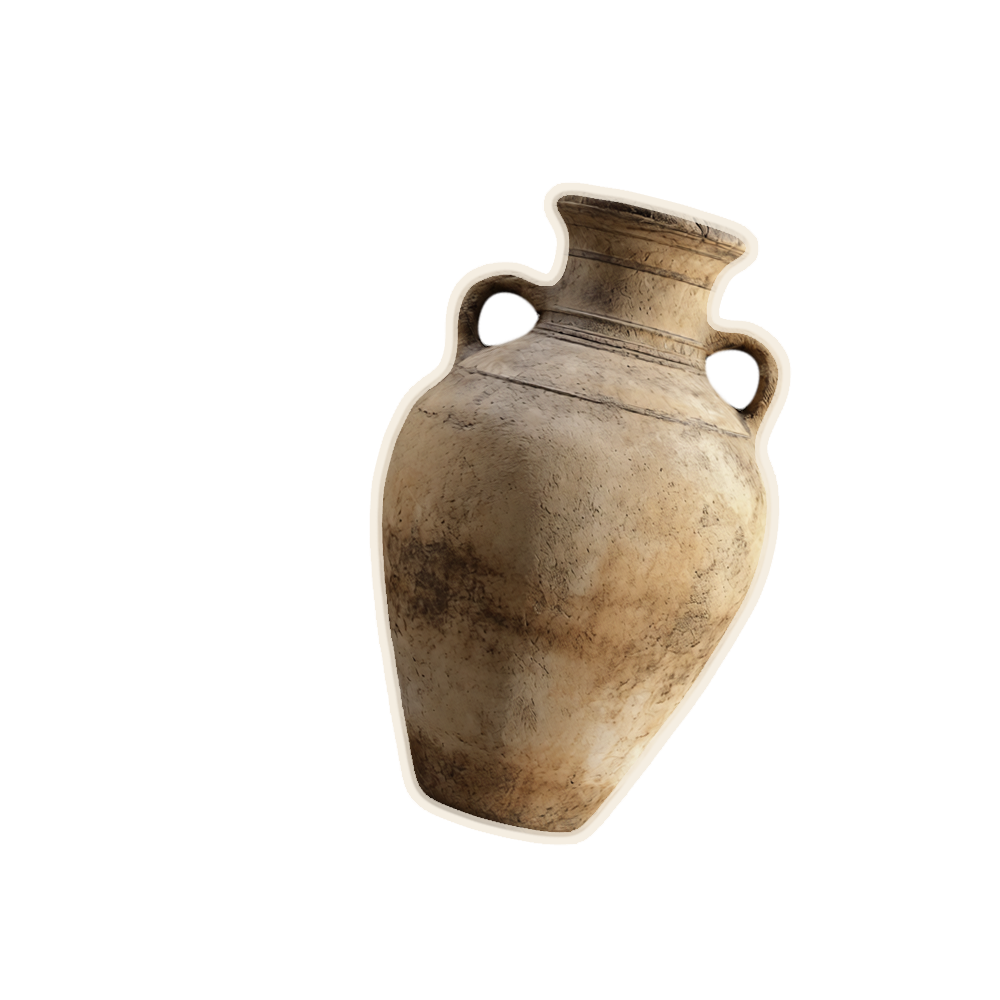
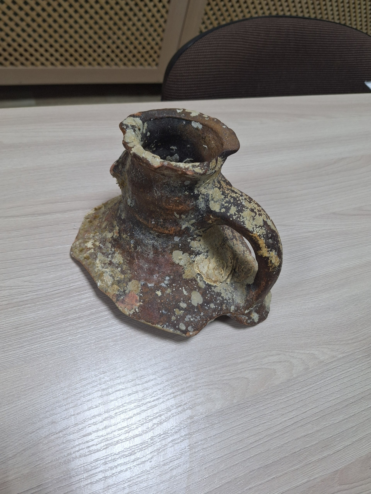

В нашем музее есть фрагмент античной амфоры, который пролежал на дне Черного моря много столетий и был поднят на поверхность дайверами 5 лет назад.

История экспоната: Этот фрагмент античной амфоры пролежал на дне Чёрного моря много столетий. Пять лет назад его подняли на поверхность дайверы. В такой посуде древние греки хранили и перевозили вино, зерно и масло.
Почему в музее туризма? Амфора — свидетель древних морских путешествий и торговых путей, которые связывали народы вокруг Чёрного моря. Она напоминает о том, что туризм и исследования начинались с таких плаваний.



Нажми на любую деталь, чтобы узнать о ней подробнее
Амфоры перевозили на торговых кораблях — триремах. Они стояли в трюмах в несколько рядов, иногда их использовали как балласт для устойчивости судна.
Изогнутые ручки характерны для амфор. Они удобны для переноски, а форма «волюта» (завиток) — типичный аттический стиль V века.
Широкая горловина позволяла использовать амфору как для хранения жидкостей, так и для сыпучих продуктов. Край укреплен для прочности.
Греки хранили в амфорах вино, оливковое масло, рыбу в рассоле, зерно и мёд. Горлышко запечатывали смолой или глиняной пробкой.
Сколько литров вина могла вместить такая амфора?